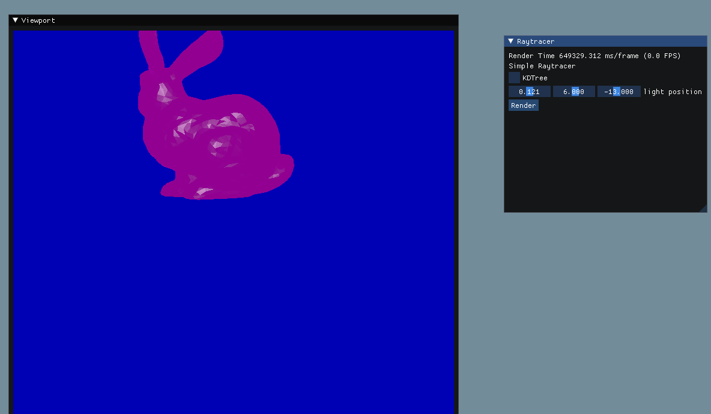
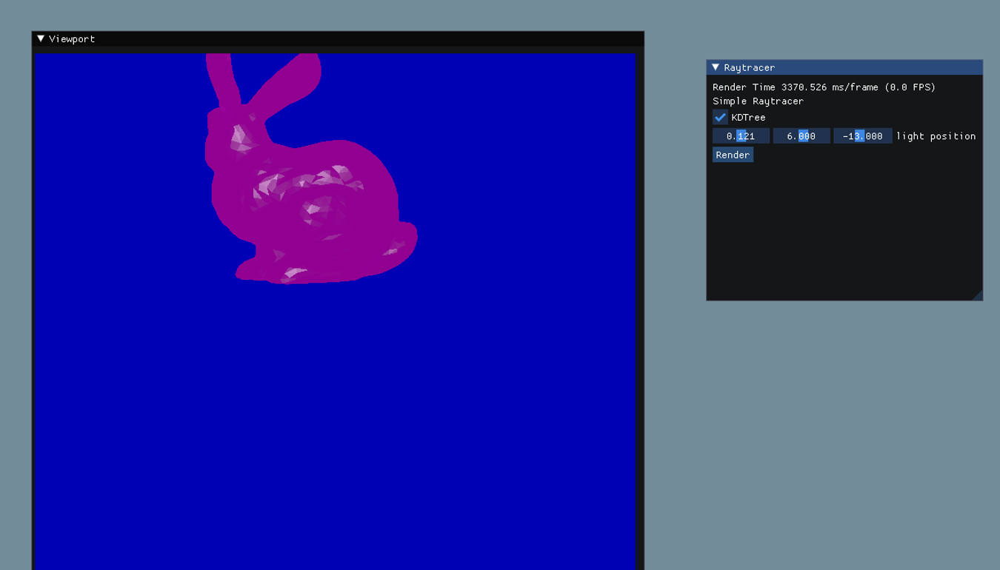

Vigneshwar Jayakumar
Advanced 1 : Kd Tree
The time taken for rendering bunny naive is 625 seconds
The time taken for building bunny's Kd tree is 24.6 seconds
The time taken for render bunny's Kd tree is 3.6 seconds
Result image:

Result image: Kd tree
